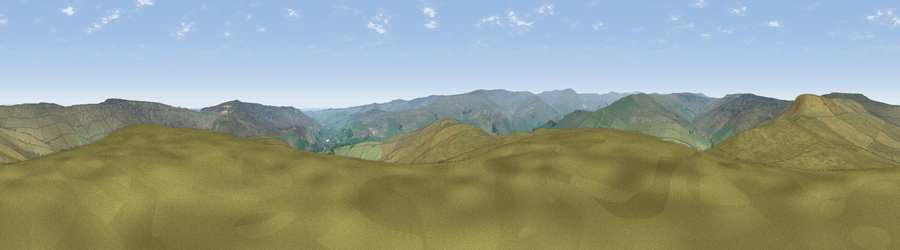

Viewpoint near Rookhope
#13973 in England · top 37% of its area beats it · near Rookhope · open accessWhere it is
The exact computed spot (NY 95875 42275). Click the marker for map links.
Public access: this spot lies on mapped open-access land (CRoW Act 2000) — you may roam here on foot. Computed from Natural England's CRoW access layer and OpenStreetMap rights of way — not the legal definitive map. Always verify locally.
The view, rendered

A 360° render of this exact spot computed from the terrain model, tree cover and land cover — summer colours, afternoon light, calibrated against photographs of famous viewpoints. Real trees, hedges and buildings will differ in detail.
The panorama
Grey silhouette: terrain skyline in each direction (720 bearings, Earth curvature and refraction included). Dashed green: skyline with trees (+15 m) and buildings (+8 m) as obstacles. Blue strip: how far the ground is visible on each bearing.
Where the view opens
Wedge length = distance to the farthest visible ground on that bearing (vegetation-aware). Rings at 10, 25 and 50 km.
What fills the view
98% grassland · 1% woodland
Angular shares of the visible panorama (visual magnitude), not map area. Landscape diversity 0.04 (0–1 Shannon).
Key numbers
More beautiful places nearby
The staircase of upgrades: each row has a higher view potential than everything closer. Driving times are estimates from straight-line distance, calibrated against real road routing — check an actual route before setting out.
| Place | Direction | Drive | Score |
|---|---|---|---|
| Long Law | NW · 1 km | ~3 min | 62.2 |
| Boltslaw West [Bolt's Law] | NNW · 3 km | ~7 min | 66.9 |
| Viewpoint near Rookhope | NNW · 3 km | ~8 min | 70.4 |
| Collier Law | E · 6 km | ~12 min | 71.7 |
| Viewpoint near Allenheads | W · 14 km | ~25 min | 74.6 |
| Viewpoint near Eggleston | SSE · 19 km | ~32 min | 76.0 |
| Pontop Pike | ENE · 22 km | ~36 min | 77.8 |
| Little Dun Fell | WSW · 27 km | ~43 min | 78.4 |
54.77537, -2.06565 · source: screening · position refined by local search. Computed location — check access rights before visiting.